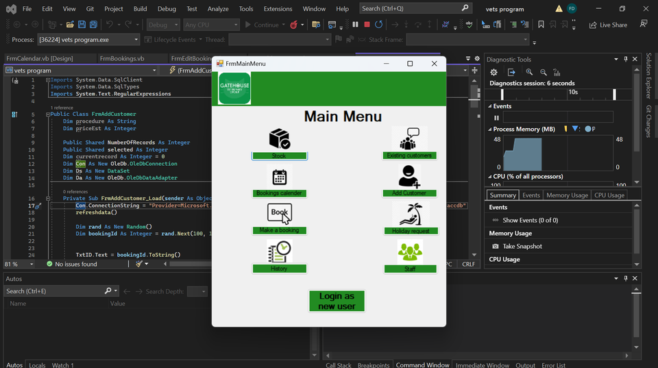

~/projects/gathouse-vets
SHIPPED
The Gathouse Vets
An old fashioned, paper based, veterinary system made digital. Turning traditional clinic workflows into something faster, clearer, and easier to use — with the full development journey documented in a dedicated project PDF.
